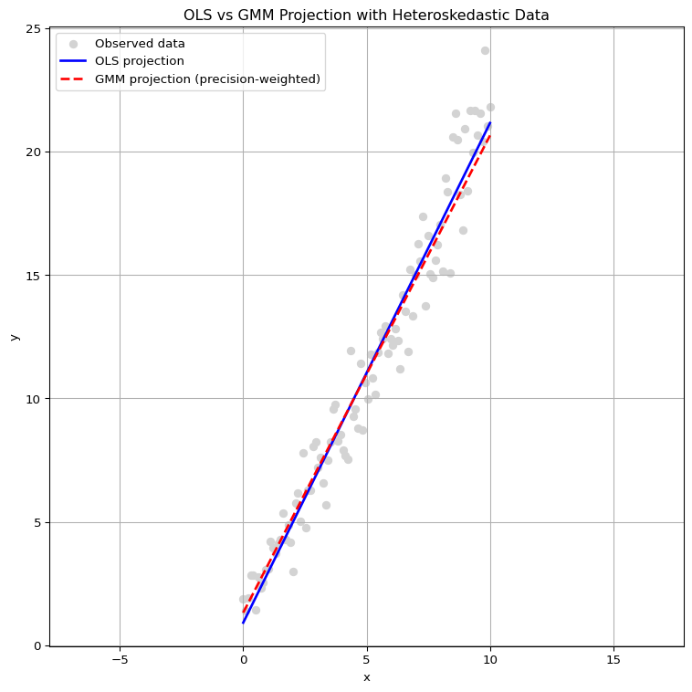

This short study is designed to explain the structural difference between Ordinary Least Squares (OLS) and the Generalized Method of Moments (GMM) from a geometric and mathematical standpoint, emphasizing their foundations in inner product spaces, with an analogy to Einstein’s Field Equations in general relativity. This analogy would be powerful not only for deep mathematical understanding but also for teaching estimation theory with geometric and physical intuition.
“In economics, GMM reshapes the geometry of estimation just as Einstein’s metric reshapes the geometry of spacetime.”
1. OLS
Orthogonal Projection in Euclidean Space
OLS solves the following problem:
\[
\hat{\beta}_{OLS} = \arg\min_\beta \| y - X\beta \|_2^2 = (X^\top X)^{-1} X^\top y
\]
This corresponds to projecting \(y\) orthogonally onto the column space of \(X\).
The residual \(\varepsilon = y - X\hat{\beta}\) satisfies:
\[
X^\top \varepsilon = 0
\]
Inner Product and Geometry
The \(L^2\) norm used in OLS is induced by the standard Euclidean inner product:
\[
\langle u, v \rangle = u^\top v
\]
The distance function becomes:
\[
\| u \|_2 = \sqrt{u^\top u}
\]
The set of parameter values yielding equal error defines a level set (isocurve):
\[
\{ \beta \mid \| y - X\beta \|_2^2 = c \} \Rightarrow \text{spheres in parameter space}
\]
This reflects Pythagorean geometry — the isocurves are circles (in 2D), spheres (in 3D), or hyperspheres in higher dimensions.
2. GMM
Weighted Projection via Positive Definite Kernel
GMM generalizes the idea by allowing estimation over a broader space defined by arbitrary moment conditions:
\[
\hat{\theta}_{GMM} = \arg\min_\theta \left[ \bar{g}_n(\theta)^\top W \bar{g}_n(\theta) \right]
\]
\(W\) is a positive definite weighting matrix, often an estimate of the optimal variance-covariance structure
Generalized Inner Product and Geometry
GMM defines a new inner product:
\[
\langle u, v \rangle_W = u^\top W v \quad \text{with } W \succ 0
\]
The corresponding norm is:
\[
\| u \|_W = \sqrt{u^\top W u}
\]
The isocurves of the GMM objective:
\[
\{ \theta \mid \bar{g}_n(\theta)^\top W \bar{g}_n(\theta) = c \} \Rightarrow \text{ellipsoids in parameter space}
\]
Thus, unlike OLS, GMM does not treat all directions equally; the weighting matrix \(W\) skews the geometry so that errors in some directions are penalized more.
3. Visual and Geometric Summary
Concept
OLS
GMM
Inner product
\(\langle u, v \rangle\)
\(\langle u, v \rangle_W = u^\top W v\)
Norm
Euclidean (\(L^2\))
Mahalanobis-like (\(W\)-norm)
Isocurve shape
Circle / Sphere
Ellipse / Ellipsoid
Geometry
Uniform in all directions
Anisotropic (weighted directions)
OLS minimizes error under the geometry of circles. GMM minimizes error under the geometry of ellipses.
4. Einstein Field Equations and GMM: Structural Analogy
Einstein’s Field Equations (EFE) in general relativity:
\(T_{\mu\nu}\): Stress-energy tensor, representing energy and matter (matter-energy distribution)
\(G_{\mu\nu}\): Einstein tensor, encoding the curvature of spacetime (curvature)
\(R_{\mu\nu}\): Ricci curvature tensor
\(R\): Scalar curvature
\(g_{\mu\nu}\): Metric tensor, defining the inner product in spacetime and governing geodesics
Additional Explanation
In EFE, the metric tensor \(g_{\mu\nu}\) defines how distances and angles are measured — it is the analogue of a positive definite kernel in GMM. The field equations determine how the geometry (curvature) of spacetime reacts to matter and energy. In this sense, spacetime is optimized or shaped in response to external inputs, just as GMM shapes its estimation space based on the kernel \(W\) and moment functions.
The level sets in general relativity are often visualized as lightcones — the surface separating causal influence from spacelike separation. Geometrically, a lightcone can be interpreted as the degenerate case of a conic section, where the quadric form
\[
Q(x) = x^\top g_{\mu\nu} x = 0
\]
results in a pair of intersecting lines: this represents all null (light-like) directions emanating from a point. These are the boundary cases between time-like and space-like intervals, analogous to the way ellipsoids in GMM collapse into degenerate forms under singular kernel matrices.
Thus, in both GMM and EFE, the shape and degeneracy of level sets encode deep information about the underlying structure — whether it is a statistical model or the geometry of spacetime.
Analogy to Estimation Frameworks
Feature
OLS
GMM
EFE (Physics)
Space
Euclidean
Kernel-defined
Curved spacetime
Inner product
\(I\)
\(W\) (kernel)
\(g_{\mu\nu}\) (metric)
Projection
Orthogonal
Weighted / Generalized
Energy-curvature balance
Level sets
Circles
Ellipses
Lightcones / geodesics
In all three cases, the key structure-defining object (\(I\), \(W\), or \(g_{\mu\nu}\)) defines how vectors are compared, how error or curvature is measured, and how optimization or balance occurs.
5. Conclusion
OLS and GMM are not just estimation techniques, but geometric procedures grounded in inner product space theory.
OLS relies on Euclidean projection, yielding circular/spherical symmetry.
GMM generalizes the space through a positive definite kernel, yielding elliptical contours and emphasizing certain directions.
This parallels how general relativity defines geometry via the metric tensor, adapting the very notion of measurement to the structure of the system.
Visuals
OLS vs GMM : 동일한 선형 회귀 구조에서도 서로 다른 projection
설정 요약:
데이터 생성:
\(y = \beta_0 + \beta_1 x + \varepsilon\)
잡음 \(\varepsilon\)는 \(x\)의 값이 커질수록 분산이 커지는 이질적(heteroskedastic) 형태로 생성
OLS:
모든 관측값을 동일한 중요도로 간주하여 잔차 제곱합을 최소화. 즉, 평균적인 방향으로 선을 맞춤.
OLS는 전체 데이터를 균등하게 반영하며, 잡음이 큰 부분에서도 기울기가 영향을 받음.
GMM:
잔차의 분산(또는 신뢰도)에 따라 가중치 positive definite weighting를 달리 부여. 이 경우 분산의 역수를 사용하여 노이즈가 적은 관측값을 더 신뢰하도록 추정.
GMM은 잡음이 작은 구간(왼쪽)의 패턴에 더 많은 가중치를 부여하여 기울기가 더 가파르게 추정
Code
import numpy as npimport matplotlib.pyplot as plt# Simulate data with heteroskedastic noise (to favor GMM adjustment)np.random.seed(0)n =100x = np.linspace(0, 10, n)X = np.vstack([np.ones(n), x]).T# True modelbeta_true = np.array([1, 2])# Heteroskedastic noise: variance increases with xnoise_std =0.5+1.5* (x / x.max()) # ranges from 0.5 to 2.0y = X @ beta_true + np.random.normal(0, noise_std)# OLS estimationbeta_ols = np.linalg.inv(X.T @ X) @ X.T @ yy_hat_ols = X @ beta_ols# GMM weighting: inverse of variance (precision weighting)W = np.diag(1/ noise_std**2)# GMM estimation (optimal weighting under heteroskedasticity)XTWX = X.T @ W @ XXTWy = X.T @ W @ ybeta_gmm = np.linalg.inv(XTWX) @ XTWyy_hat_gmm = X @ beta_gmm# Plot with aspect ratio 1:1plt.figure(figsize=(8, 8))plt.scatter(x, y, color='lightgray', label='Observed data')plt.plot(x, y_hat_ols, label='OLS projection', color='blue', linewidth=2)plt.plot(x, y_hat_gmm, label='GMM projection (precision-weighted)', color='red', linestyle='--', linewidth=2)plt.title("OLS vs GMM Projection with Heteroskedastic Data")plt.xlabel("x")plt.ylabel("y")plt.axis('equal') # Set equal aspect ratioplt.legend()plt.grid(True)plt.tight_layout()plt.show()

objective function (quadratic form)의 level set
참고: GMM의 목적함수는 원래부터 정규화(normalized)되어 있는 반면, OLS의 목적함수는 정규화 없이 나타나는 일반적 2차형식이므로, 두 방법을 엄밀히 비교하려면 OLS도 동일한 형태로 정규화해 주어야 함.